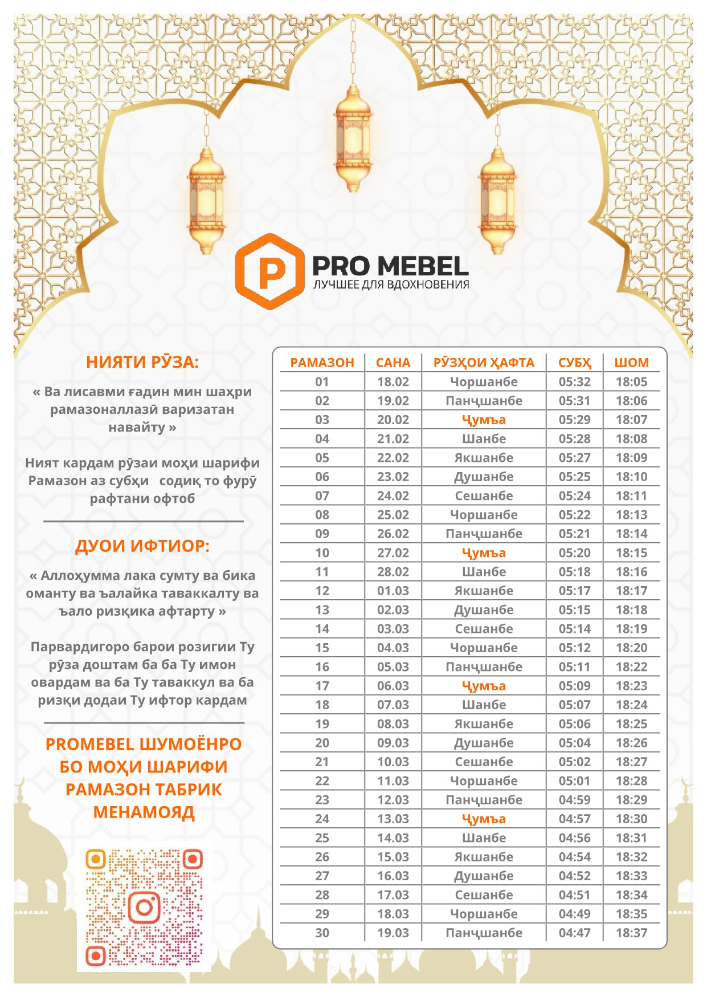

Ramadan Calendar 2026
Ramadan Calendar 2026 (English)
This page contains a Ramadan Calendar for 2026 with fasting times. The dates of Ramadan depend on the lunar calendar and may vary by region. This calendar is intended for use in Tajikistan and nearby regions.
The image format allows easy saving, sharing, and offline use.
Календарь Рамадана 2026 (Русский)
На этой странице размещён календарь Рамадана на 2026 год. Даты Рамадана определяются по лунному календарю и могут отличаться в зависимости от региона.
Календарь представлен в виде изображения для удобного просмотра и сохранения.
Тақвими Рамазон 2026 (Тоҷикӣ)
Дар ин саҳифа тақвими моҳи Рамазон барои соли 2026 ҷойгир шудааст. Оғоз ва анҷоми Рамазон вобаста ба тақвими ҳиҷрӣ муайян мегардад ва метавонад вобаста ба минтақа фарқ кунад.
Ин тақвим барои истифода дар Тоҷикистон омода шудааст.